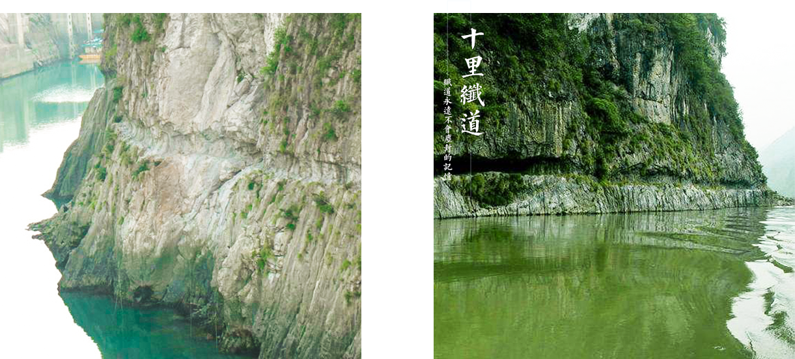

Before entering the ancient town of gong tan, we first gave a talk to the people about the ancient 10-li road, which has a "bank" and "zi". History, towpaths men digging, hew to thousands of years off and on a narrow fiber, is like a long dragon through left a deep footprint, they pull on the wujiang river, towpaths, pull song formed a unique culture, wujiang river now high out of pinghu, all this has become history, but leave the heroic culture is eternal. The fibers are arranged in a half mountain rock wall, which is characterized by shorter, narrow and excavated ages, and the shape of the fibers is naturally differentThe most late-built fibre track was excavated by the government of the republic of China during the war of resistance against Japanese aggression in 1941, when it was mainly used to solve the need for the transportation of war materials. Unfortunately, the ten-mile track, which was built by the wujiang penshui power plant, was submerged in 2009 and will never be seen again. However, we believe that as human beings and the imprints of their own destiny, the fiber path is a memory that will never be sealed
